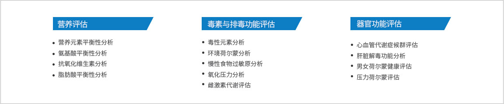
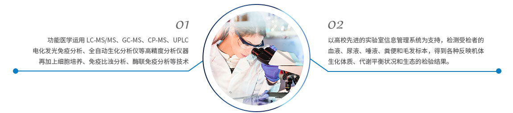

完整疗愈健康管理中心
通过生物电，生物共振，能量学，心理等方法，综合对客人进行细胞层面的保养，尤其是线粒体ATP层面上的保养。
功能医学打开了一扇解决慢性疾病的大门，“功能医学认为慢病是我们的基因与我们所处的环境不匹配的结果”这是一种医疗思维侧重点的转移，从治疗单一器官到治疗整个有机体。以系统循证医学为基础，治疗是以人为主，而不是以疾病为导向，它专注于针对个性化病因而不是简单的症状治疗。功能医学是以通过先期评估、早期预防以及改善机体功能的方法，来全面干预和治疗慢性疾病的新型医疗模式，是预防、治疗慢性疾病的有效手段。
简单地说，功能医学检测是根据每一个病人独特而与众不同的体质，评估身体器官无临床症状变化的功能状况，“其评估器官的“功能”而非仅器官的“病理”。将生物化学，生理学、免疫学、营养学、遗传学等多学科综合，把生物医学研究中的科学证据加以整合并运用。通过检测个人的生化体质、代谢、生态环境等，以达到早期了解器官功能及储备能力。
功能医学检测内容
功能检测方法
基因检测定制流程
功能医学检测优势